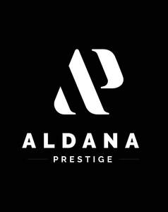

Trade Mark Journal No.2025/027 4 July 2025
UK00004223854 24 June 2025 (3,21,25,26)

- Class 3
- Hair lighteners; Hair shampoos; Hair texturizers; Hair shampoo; Hair pomades; Hair colourants; Hair moisturizers; Hair mousses; Hair lotions; Hair relaxers; Hair cosmetics; Hair serums; Hair mascara; Hair moisturisers; Dyes for the hair; Hair dyes; Hair bleaches; Hair oils; Hair bleach; Hair mousse; Hair lotion; Hair conditioners; Hair styling lotions; Hair emollients; Hair conditioner; Hair nourishers; Hair colorants; Hair creams; Non-medicated hair shampoos; Hair balms; Hair gel; Hair sprays; Hair tonics; Hair dye; Shampoos for human hair; Hair spray; Tints for the hair; Mousses being hair styling aids; Colouring lotions for the hair; Hair gels; Mousses [toiletries] for use in styling the hair; Hair cream; Hair styling gel; Hair conditioners for babies; Hair neutralizers; Hair lacquers; Styling sprays for the hair; Hair wax; Hair balsam; Hair styling waxes; Hair rinses; Cosmetic hair lotions; Baby hair conditioner; Hair styling gels; Styling gels for the hair; Hair conditioner bars; Hair styling spray; Hair balm; Hair masks; Hair color; Hair lacquer; Hair moisturising conditioners; Non-medicated hair lotions; Hair rinses [for cosmetic use]; Hair colouring; Cosmetics for the use on the hair; Hair tonics [for cosmetic use]; Hair colouring and dyes; Hair oil; Hair care lotions; Hair care serums; Hair powder; Hair liquids; Hair chalks; Wax treatments for the hair; Hair color removers; Bleaches for use on the hair; Hair fixers; Oils for hair conditioning; Hair colour removers; Colour removers for the hair; Hair care lotions [for cosmetic use]; Cosmetics; Hair care creams [for cosmetic use]; Cosmetic preparations for the hair and scalp; Cosmetics for eye-lashes; Hair tonic [for cosmetic use]; Skin moisturizers used as cosmetics; Facial creams [cosmetics]; Skincare cosmetics; Skin fresheners [cosmetics]; Facial gels [cosmetics]; Beauty preparations for the hair; Colour cosmetics for the skin; Eyebrow cosmetics; Hair protection lotions; Body and facial creams [cosmetics]; Skin masks [cosmetics]; Cosmetics for eye-brows; Hair care creams; Cosmetic hair care preparations; Moisturisers [cosmetics]; Nail cosmetics; Cosmetic hair dressing preparations; Skin care cosmetics; Body and facial gels [cosmetics]; Tanning oils [cosmetics]; Colour cosmetics; Mousses [cosmetics]; Body creams [cosmetics]; Tanning gels [cosmetics]; Skin make-up; Lip cosmetics; Cosmetics for use in the treatment of wrinkled skin; Hair desiccating treatments for cosmetic use; Hair styling preparations; Anti-aging moisturizers used as cosmetics; Natural cosmetics; Cosmetics for use on the skin; Cosmetics for suntanning; Cosmetics for the treatment of dry skin; Hair grooming preparations; Cosmetic facial lotions; Facial lotions [cosmetic]; Hairstyling serums; Suntan oils [cosmetics]; After-sun oils [cosmetics]; Hair protection creams; Beauty care cosmetics; Powder for make-up; Make-up powder; Powder (Make-up -); Hair-washing powder; Hair liquid; Body talcum powder; Washing powder; Face powder; Hair glaze; Body powder; Bath powder [cosmetics]; Talcum powder; Cosmetic white face powder; Loose face powder; Bath powder; Tooth powder; Talcum powder [for cosmetic use]; Cosmetic powder; Face powder [for cosmetic use]; Creamy face powder; Soap powder; Hair glazes; Styling paste for hair; Baby powder; Henna powders; Body mask powder; Tooth powder [for cosmetic use]; Laundry powder; Perfumed powder; Hair bleaching preparations; Bleaching preparations for the hair; Dusting powder; Face powder (Non-medicated -); Adhesives for false eyelashes, hair and nails; Fake blood; Fake blood being theatrical make-up; Hair care masks; Hair removing cream; Perfume; Perfumes; Perfumery and fragrances; Amber [perfume]; Perfume oils; Fragrances; Oils for perfumes and scents; Fragrance sachets; Cologne; Musk [perfumery]; Perfumeries; Eau de cologne [cologne water]; Colognes; Aromatics for perfumes; Liquid perfumes; Perfume water; Room perfume sprays; Perfumed sachets; Scents; Potpourris [fragrances]; Eau de parfum; Eaux de Cologne; Eaux de cologne; Eau de colognes; Eau de Cologne; Eau de cologne; Perfumed soaps; Fragrance emitting wicks for room fragrance; Aromatics for fragrances; Perfumery; Extracts of perfumes; Cedarwood perfumery; Perfumes for cardboard; Fragrance refills for non-electric room fragrance dispensers; Extracts of flowers [perfumes]; Flowers (Extracts of -) [perfumes]; Extracts of flowers being perfumes; Perfumed potpourris; Ionone [perfumery]; Perfumes for ceramics; Scented sachets; Perfumed soap; Scented water for fragrancing; Perfumed powders; Scented soaps; Aftershave lotions; Natural oils for perfumes; Perfuming sachets; Perfumed powders [for cosmetic use]; Scented oils; Mint for perfumery; Body fragrances; Scented linen sprays; Room perfumes in spray form; Perfumed powder [for cosmetic use]; Scented body lotions; Perfumed creams; Vanilla perfumery; Body deodorants [perfumery]; After-shave lotions; Fragrance sachets for eye pillows; Geraniol for fragrancing; Air fragrance reed diffusers; Room fragrances; Sachets for perfuming linen; Linen (Sachets for perfuming -); Scented body spray; Cologne water; Aftershaves; Fragrant sachets; Perfumery products; Synthetic perfumery; Solid perfumes; Eaux de toilette; Aftershave balms; Eau de toilette; Synthetic vanillin [perfumery]; Deodorants for personal use [perfumery]; Perfume oils for the manufacture of cosmetic preparations; Aftershave; Scented room sprays; Scented body lotions and creams; Feminine deodorant sprays; Ethereal oils for fragrancing; Suntan lotion [cosmetics]; Fragrances for automobiles; Perfumed water; Scented wood; Fragrance preparations; Household fragrances; Peppermint oil [perfumery]; Essences for fragrancing; Scented body creams; After-shave balms; Perfumed lotions [toilet preparations]; Aftershave balm; Incense spray; Air fragrance preparations; Geraniol fragrancing compounds; Natural perfumery; Scented water; Scented bathing salts; Perfumed body lotions [toilet preparations]; After-shave; Scented oils used to produce aromas when heated; Incense sachets; Agarwood [incense]; Aftershave creams; Perfumed oils for skin care; Scented linen water; Aromatherapy lotions; Beauty lotions; Scented fabric refresher sprays; Perfumed toilet waters; Skin lotion; Shaving lotion; Facial lotion; Hair strengthening treatment lotions; Non-medicated balm for hair; Skin lotions; Lotions for the skin; Shaving lotions; Moisturizing body lotions; Hair and body wash; Skin cleansing lotion; Moisturising body lotion [cosmetic]; Facial lotions; Creams for fixing hair; Body lotion; Moisturising skin lotions [cosmetic]; Bath lotion; Hair care serum; Skin moisturizer; Shampoo; Hair tonic; Moisture body lotion; Body mask lotion; Depilatory lotions; Baby lotion; Hair protection gels; Styling lotions; Baby shampoo mousse; Hair protection mousse; Non-medicated skin lotions; Skin moisturizers; Hair tonic [non-medicated]; Gels for use on the hair; Sun tan lotion; Hair rinses [shampoo-conditioners]; Dandruff shampoo; Sunscreen lotions; Suntan lotions; Lotions for beards; Gels for fixing hair; Skin moisturizer masks.
- Class 21
- Hair for brushes; Hair brushes; Hair combs; Combs for back-combing hair; Powder puffs; Cattle hair for brushes; Hair color application brushes; Shaving brushes of badger hair; Hair tinting brushes; Hot air hair brushes; Electric hair combs; Brushes; Brush holders; Shaving brush holders; Scrubbing brushes; Shaving brush stands; Dusting brushes; Brushes (except paint brushes); Eyeliner brushes; Toilet brush sets; Mascara brushes; Basting brushes; Brush goods; Mopping brushes; Nail brushes; Tongue cleaning brushes; Tongue brushes; Interdental brushes; Tooth brush cases; Lint brushes; Pastry brushes; Shaving brushes; Tooth brushes; Brushes for cleaning; Cleaning brushes; Horsehair for brushes; Toothbrush bristles; Eyelash brushes; Lip brushes; Crumb brushes; Shampoo brushes; Mane brushes; Scraping brushes; Washing brushes; Mushroom brushes; Toilet brush holders; Exfoliating brushes; Interdental brushes for cleaning the teeth; Eyebrow brushes; Bottle brushes; Lawn brushes; Make-up brushes; Bottle cleaning brushes; Toilet brushes; Pot cleaning brushes; Washing-up brushes; Fireplace brushes; Dish brushes; Lavatory brush stands; Tub brushes; Bathtub brushes; Carpet-cleaning brushes; Tooth brushes, non-electric; Brushes (except paintbrushes); Brushes, except paintbrushes; Bath brushes; Electric tooth brushes; Cake brushes; Dishwashing brushes; Brushes (Dishwashing -); Skin cleansing brushes; Brushes for washing up; Brush making materials; Handles for brushes; Denture brushes; Lavatory brushes; Horse brushes; Brushes for basting meat; Holders for shaving brushes; Electric rotating hair brushes; Stands for shaving brushes; Floor brushes; Window groove cleaning brushes; Lamp-glass brushes; Boot brushes; Stands for tooth brushes; Water closet brush holders; Shoe brushes; Brushes for use on tree bark; Raccoon dog hair for brushes; Cosmetics brushes; Blacking brushes; Horse brushes of wire; Feeding bottle brushes; Cosmetic brushes; Cleaning brushes for teapot spouts; Ski wax brushes; Brushes for household use; File brushes; Holders for brushes; Clothes brushes; Golf brushes; Ship-scrubbing brushes; Brushes for cleaning cars; Mane brushes [horse combs]; Deshedding brushes for pets; Brushes for grooming horses; Brushes for cleaning footwear; Handles (Non-metallic -) for brushes; Brushes for pets; Automobile wheel cleaning brushes; Brushes for pipes; Cleaning brushes for feeding bottles; Electric pet brushes; Combs for the hair (Large-toothed -); Large-toothed combs for the hair; Perfume atomisers; Perfume bottles; Perfume sprayers; Perfume vaporizers; Perfume atomizers [empty]; Vaporizers for perfume [empty]; Perfume burners; Burners (Perfume -); Scent sprays [atomizers]; Perfume sprays, sold empty; Perfume sprayers [sold empty]; Perfume bottles sold empty; Vaporizers for perfume sold empty; Perfume burners [other than electric].
- Class 25
- Cap visors; Cap peaks; Peaks (Cap -); Caps; Caps [headwear]; Caps being headwear; Caps with visors; Skull caps; Bucket caps; Baseball caps; Baseball caps and hats; Peaked caps; Knitted caps; Knot caps; Shower caps; Caps (Shower -); Garrison caps; Flat caps; Swimming caps [bathing caps]; Swim caps; Bathing caps; Sports caps and hats; Sports caps; Golf caps; Cycling caps; Swimming caps; Waterpolo caps; Beanie hats; Visors [headwear]; Visors being headwear; Bobble hats; Top hats; Thermal headgear; Baseball hats; Headgear for wear; Peaked headwear; Vest tops; Bucket hats; Bonnets [headwear]; Sun visors [headwear]; Jerseys; Sleeveless jerseys; Rugby jerseys; Football jerseys; Jerseys [clothing]; Sports jerseys; Volleyball jerseys; Short-sleeve shirts; Football shirts; Short-sleeved shirts; Sports jerseys and breeches for sports; Sport shirts; Rugby shirts; Moisture-wicking sports shirts; Knit shirts; American football shirts; Short-sleeved T-shirts; Turtleneck shirts; Soccer shirts; Button-front aloha shirts; Long-sleeved shirts; Shirts; Sleeveless pullovers; Dress shirts; Sports shirts; Corduroy shirts; Polo shirts; American football bibs; Shirt yokes; Yokes (Shirt -); Baseball uniforms; Guernseys; Sleeveless jackets; V-neck sweaters; Bib shorts; Shirt fronts; Ramie shirts; Tracksuit tops; Moisture-wicking sports pants; Maternity shirts; Camouflage shirts; Polo knit tops; Woven shirts; American football pants; Sleeved jackets; Sports shirts with short sleeves; Fleece pullovers; Aloha shirts; Open-necked shirts; Mock turtleneck shirts; Bib tights; Soccer bibs; Embroidered clothing; American football shorts; Fleece shorts; Polo sweaters; Knit jackets; Uniforms; Gloves for apparel; Men's dress socks; Collared shirts; Turtleneck pullovers; Golf shirts; Fleece jackets; Fishing shirts; Athletic uniforms; T-shirts; Padded shirts for athletic use; Blue jeans; Shirts and slips; Sports bibs; Rugby shorts; Moisture-wicking sports bras; Sports over uniforms; American football socks; Bibs, sleeved, not of paper; Sweatshorts; Tennis shirts; Pyjamas [from tricot only]; Rugby tops; Hooded sweat shirts; Bib overalls for hunting; Under shirts; Tracksuits; Shirts for suits; Casual shirts; Cycling pants; Fleece tops; Blouson jackets; Sweat shirts; Korean outer jackets worn over basic garment [Magoja]; Jackets being sports clothing; Sweatshirts; Shawls [from tricot only]; Referees uniforms; Baselayer tops; Sports pants; Scrimmage vests; Fleece vests; Sports garments; Pique shirts; Tracksuit bottoms; Long sleeve pullovers; Denim jackets; Polar fleece jackets; Blazers; Night shirts; Quilted jackets [clothing]; Pullovers; Clothing; Jackets [clothing]; Knitwear [clothing]; Ready-to-wear clothing; Woolen clothing; Furs [clothing]; Garments for protecting clothing; Layettes [clothing]; Clothing layettes; Linen clothing; Headbands [clothing]; Headbands for clothing; Gloves [clothing]; Gloves as clothing; Clothes; Aprons [clothing]; Maternity clothing; Kerchiefs [clothing]; Denims [clothing]; Shorts [clothing]; Cashmere clothing; Capes (clothing); Oilskins [clothing]; Gabardines [clothing]; Leather clothing; Clothing of leather; Leather (Clothing of -); Silk clothing; Collars [clothing]; Parts of clothing, footwear and headgear; Knitted clothing; Veils [clothing]; Hoods [clothing]; Windproof clothing; Corsets [clothing, foundation garments]; Wristbands [clothing]; Bandeaux [clothing]; Belts [clothing]; Belts for clothing; Rainproof clothing; Waterproof clothing; Visors [clothing]; Casual clothing; Jackets (Stuff -) [clothing]; Stuff jackets [clothing]; Bottoms [clothing]; Clothing for leisure wear; Playsuits [clothing]; Ready-made clothing; Latex clothing; Woven clothing; Trunks being clothing; Infant clothing; Drawers as clothing; Leisure clothing; Ties [clothing]; Clothing for sports; Sports clothing; Drawers [clothing]; Athletic clothing; Clothing for children; Muffs [clothing]; Clothing for babies; Bodies [clothing]; Tops [clothing]; Clothing for infants; Clothing for cycling; Weatherproof clothing; Pockets for clothing; Water-resistant clothing; Fabric belts [clothing]; Triathlon clothing; Clothing for skiing; Beach clothing; Thermal clothing; Handwarmers [clothing]; Cowls [clothing]; Chaps (clothing); Men's clothing; Fishing clothing; Braces for clothing; Mitts [clothing]; Dance clothing; Hats; Fascinator hats; Cloche hats; Fur hats; Toques [hats]; Woolly hats; Ski hats; Fake fur hats; Ushankas [fur hats]; Fashion hats; Rain hats; Sun hats; Mitres [hats]; Miters [hats]; Frames (Hat -) [skeletons]; Hat frames [skeletons]; Hats (Paper -) [clothing]; Paper hats [clothing]; Party hats [clothing]; Beach hats; Small hats; Sedge hats (suge-gasa); Paper hats for wear by chefs; Paper hats for wear by nurses; Chefs' hats; Beanies; Paper hats for use as clothing items; Fedoras; Knitted gloves; Clothing for horse-riding [other than riding hats]; Head wear; Headgear; Head scarves; Headwear; Mittens; Camouflage gloves; Sock suspenders; Woollen socks; Leather headwear; Fingerless gloves as clothing; Visors [hatmaking]; Valenki [felted boots]; Bootees (woollen baby shoes); Head sweatbands; Fur cloaks; Short overcoat for kimono (haori); Turtleneck sweaters; Face masks [fashion wear] ; Dress pants; Gloves; Fishing headwear; Fur jackets; Toe socks; Golf clothing, other than gloves; Lace boots; Slipper socks; Breeches for wear; Face mask [clothing] ; Jump Suits; Jumpers; Spiked running shoes; Down vests; Polo neck jumpers; Footwear for sport; Footwear for use in sport; Sport shoes; Boots for sport; Clothes for sport; Sport coats; Sport stockings; Footwear for sports; Sports footwear; Sports singlets; Sports shoes; Footwear not for sports; Sports jackets; Combative sports uniforms; Sports wear; Sports vests; Boots for sports; Sports socks; Clothes for sports; Sports clothing [other than golf gloves]; Sports bras; Sports overuniforms; Sports headgear [other than helmets]; Athletics footwear; Hijabs; Headscarfs; Headscarves; Burkas; Niqabs; Shawls and headscarves; Chadors; Thobes; Turbans; Veils; Headdresses [veils]; Clothing for wear in judo practices; Scarves; Scarfs; Dress shields; Shields (Dress -); Mantillas; Snoods [scarves]; Maternity wear; Clothing for wear in wrestling games; Underwear for women; Silk scarves; Kaftans; Dress shoes; Religious garments; Basic upper garment of Korean traditional clothes [Jeogori]; Sashes for wear; Miniskirts; Shoulder scarves; Neck scarves; Bridesmaids wear; Neck tube scarves; Judo uniforms; Bathing costumes for women; Pleated skirts for formal kimonos (hakama); Maternity dresses; Foulards [clothing articles]; Ladies wear; Saris; Maternity leggings; Caftans; Shawls; Tennis wear; Nappy pants [clothing]; Dresses for evening wear; Headbands; Cashmere scarves; Kendo outfits; Taekwondo uniforms; Skirts; Dress suits; Pinafore dresses; Clothing for gymnastics; Infant wear; Maternity lingerie; Suspender belts for women; Braces [suspenders] for clothing / Suspenders [braces] for clothing; Braces for clothing [suspenders]; Neck scarves [mufflers]; Mufflers [neck scarves]; Mufflers as neck scarves; Maternity underwear; Culotte skirts; Neck scarfs [mufflers]; Under garments; Formal wear; Rain wear; Exercise wear; Shoes for casual wear; Casual wear; Evening wear; Swim wear for children; Ski wear; Surf wear; Formal evening wear; Children's wear; Leisure wear; Shoulder wraps [clothing]; Shoulder wraps for clothing; Swim wear for gentlemen and ladies; Gloves including those made of skin, hide or fur; Weather resistant outer clothing; Wraps [clothing]; Leather belts [clothing]; Belts made out of cloth; Down garments; Protective metal members for shoes and boots; Shoulder straps for clothing; Suit coats.
- Class 26
- Tresses of hair; Hair (Tresses of -); Hair tresses; Hair ornaments, hair rollers, hair fastening articles, and false hair; Hair twisters [hair accessories]; Plaits of hair; Hair barrettes; Hair extensions; Hair elastics; Hair scrunchies; False hair for Japanese hair styling (kamoji); Hair curlers; Hair ribbons for Japanese hair styling (tegara); Hair tassel strings for Japanese hair styling (motoyui); Synthetic hair; Tabodome [hair pins for fixing back-hairpieces for use in Japanese hair styling]; Hair rollers; Hair curl clips; Chignons for Japanese hair styling (mage); Hairpieces for Japanese hair styling (kamishin); Hairpieces for Japanese hair styling [kamishin]; Hair tassel ornaments for Japanese hair styling (negake); Plaited hair; Hair (Plaited -); Ornamental hair pins for Japanese hair styling (kogai); Hair weaves; Hair clips; Bows for the hair; Hair bows; Toupees [false hair]; Ornamental combs for Japanese hair styling (marugushi); Sticks for use in styling the hair; Wigs for wear; Lanyards for wear; Under wires for brassieres; Lanyards [cords] for wear; Badges for wear, not of precious metal; Novelty buttons [badges] for wear; Belt buckles [for clothing]; Belt buckles for clothing; Elastic strips incorporating grips for securing trousers to riding boots; Buckles for clothing; Buckles for clothing [clothing buckles]; Belt buckles [clothing accessories]; Clothing buckles; False hair; Hair (False -); Hair ornaments in the nature of hair wraps; Hair ribbons; Ribbons for the hair; Ornaments (Hair -); Ornaments for the hair; Hair ornaments; Hair decorations; Hair pieces; Human hair; Hair coloring foils; Hair wraps; Waving pins for the hair; Hair pins; Pins for the hair; Oriental hair pins; Ponytail holders and hair ribbons; Electric hair curlers; Wigs; Hair curling papers; Papers (Hair curling -).
David Jose Aldana